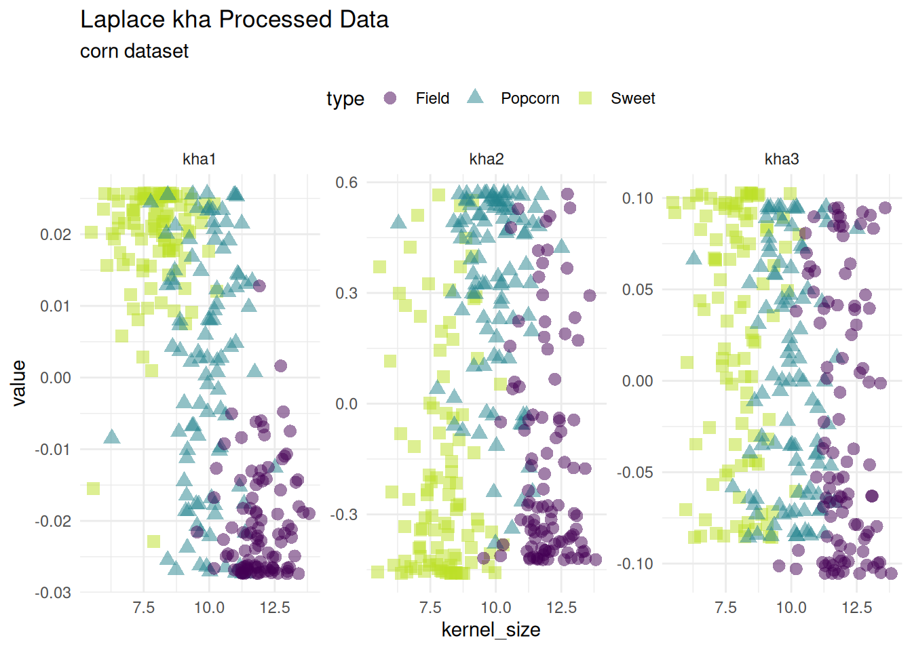
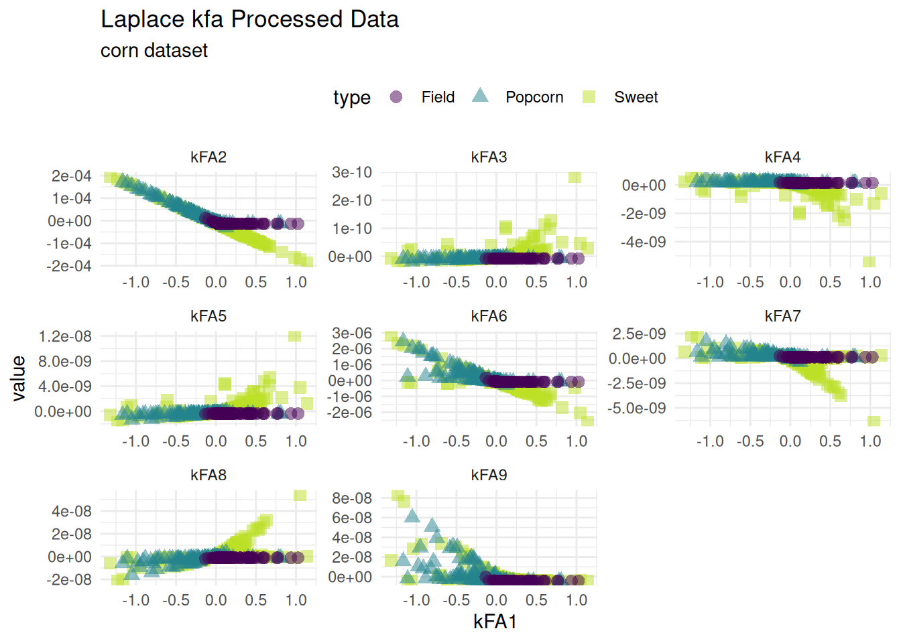

corn_data |>
ggplot(aes(x = kernel_size, y = height, color = type, shape = type)) +
geom_point(size = 3) +
theme_minimal() +
labs(title = 'Original Unprocessed Data',
subtitle = "corn dataset") +
scale_color_viridis_d(end = .9) +
theme(legend.position = "top")pre-processors in maize
kernel recipes
{recipes} is a package within the tidymodels ecosystem. The main goal of recipes is to create steps which are pre-processors for datasets. These steps can be useful for simplifying large datasets into key components, dropping NA values, creating lags, and more. These steps create new features that can then be used for a regression or classification model. Recipes for {maize} focus on specialty kernel methods for extracting components/features, thanks to {kernlab} and {mildsvm} packages.
Below we will apply the recipe steps in maize directly to corn data.
Corn Dataset
a glimpse at the original dataset. The corn dataset has three types of corn that vary in height and kernel size.
Kernel PCA
Kernel Principal Components Analysis is a nonlinear form of principal component analysis. Laplacian and tanh kernels are supported with step_kpca_*.
Laplace PCA
kpca_data <-
recipe(type ~ ., corn_data) |>
step_kpca_laplace(height, num_comp = 6) |>
prep() |>
bake(new_data = corn_data)
kpca_data |>
tidyr::pivot_longer(-c(kernel_size, type)) |>
ggplot(aes(x = kernel_size, y = value, color = type, shape = type)) +
geom_point(size = 3) +
facet_wrap(~name, scales = 'free') +
theme_minimal() +
labs(title = 'Laplace kPCA Processed Data',
subtitle = "corn dataset") +
scale_color_viridis_d(end = .9) +
theme(legend.position = "top")Kernel Hebbian Algorithm
Kernel Hebbian Algorithm is a nonlinear iterative algorithm for principal component analysis. Laplacian and tanh kernels are supported with step_kha_*.
Laplace Hebbian
kha_data <-
recipe(type ~ ., corn_data) |>
step_kha_laplace(height, num_comp = 3) |>
prep() |>
bake(new_data = corn_data)
kha_data |>
tidyr::pivot_longer(-c(kernel_size, type)) |>
ggplot(aes(x = kernel_size, y = value, color = type, shape = type)) +
geom_point(size = 3, alpha = .5) +
facet_wrap(~name, scales = 'free') +
theme_minimal() +
labs(title = 'Laplace kha Processed Data',
subtitle = "corn dataset") +
scale_color_viridis_d(end = .9) +
theme(legend.position = "top")
Kernel Feature Analysis
The Kernel Feature Analysis algorithm is an algorithm for extracting structure from possibly high-dimensional data sets. Similar to kpca a new basis for the data is found. The data can then be projected on the new basis. The laplacian kernel is supported with step_kfa_laplace.
Laplace Feature Analysis
kfa_data <-
recipe(type ~ ., corn_data) |>
step_kfa_laplace(height, kernel_size, num_comp = 9, sigma = .87) |>
prep() |>
bake(new_data = corn_data)
kfa_data |>
tidyr::pivot_longer(-c(kFA1, type)) |>
ggplot(aes(x = kFA1, y = value, color = type, shape = type)) +
geom_point(size = 3, alpha = .5) +
facet_wrap(~name, scales = 'free') +
theme_minimal() +
labs(title = 'Laplace kfa Processed Data',
subtitle = "corn dataset") +
scale_color_viridis_d(end = .9) +
theme(legend.position = "top")
Nystrom Kernel Feature Map
Use Nyström method, step_kfm_nystrom to fit a feature map that approximates the ‘radial’ kernel.
kfm_data <-
recipe(type ~ ., corn_data) |>
step_kfm_nystrom(height, kernel_size, r = 10, sigma = .01) |>
prep() |>
bake(new_data = corn_data)
kfm_data |>
tidyr::pivot_longer(-c(kFM01, type)) |>
ggplot(aes(x = kFM01, y = value, color = type, shape = type)) +
geom_point(size = 3, alpha = .5) +
facet_wrap(~name, scales = 'free') +
theme_minimal() +
labs(title = 'Nystrom KFM RBF Processed Data',
subtitle = "corn dataset") +
scale_color_viridis_d(end = .9) +
theme(legend.position = "top")